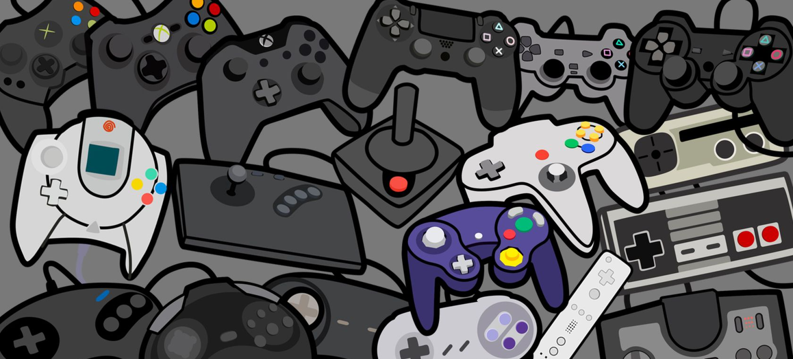

Jugar Videojuegos

Es algo que me apasiona desde que soy niño recuerdo que mi primera consola fue un gamecube
en donde pasaba muchas horas jugando , me gustan mucho ya que puedo meterme en las historias de cada personaje
y ser ellos practicamente. En la actualidad me gustan los juegos de aventura , fantasía , de accion y de plataformas.
También soy mas de jugar en consola que en la computadora siempre prefiero Playstation o nintendo.
Hacer Ejercicio

Todo comenzó como un proposito de inicio de año pero luego conforme pasaron los años
se convirtió en algo que me apasiona hacer ya que me ayudó a liberar el estrés diario y mejoró mi salud. Intento ser constante
con los ejercicios cuando voy al gimnasio , me gusta mucho hacer ejercicios con pesas y que tengan que ver con la flexibilidad del cuerpo actualmente
voy 4 veces a la semana haciendo 1 hora por dia de ejercicio.
Ir Al Cine

Me gusta demasiado el séptimo arte ya que puedo ver el reflejo del esfuerzo de muchas personas
y el como nos pueden hacer creer que las historias son reales como si los actores en realidad lo vivieran al igual que me asombra
ver los efectos especiales que lucen tan reales en la actualidad , voy muy seguido al cine me gusta ver casi todo tipo de peliculas
mas si esta tiene una historia interesante por contar y con actores de gran magnitud.